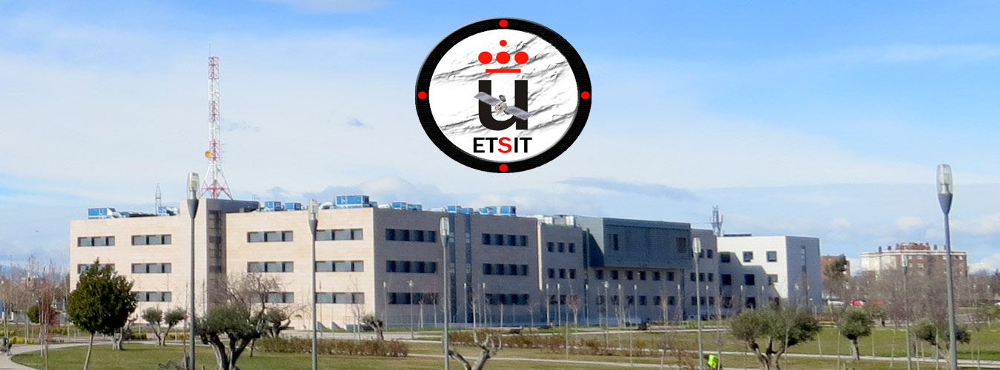

BIENVENIDOS A LA ETSIT URJC
Aqui encontrareis todas las novedades de nuestra escuela asi como información sobre nuestras diversas actividades
Información
Una Universidad a tus necesidades
Una Cantidad de Recursos a tu disposicion para que saques todo el provecho a la Universidad
Biblioteca WebMail Directorio Portal Servicios Campus Virtual Video
Un Espacio Para Aprender
En nuestro MOODLE tendras a tu disposicion Apuntes, Ejercicios, Ayuda, y toda la informacion para el alumno de la escuela
i ENTRA !